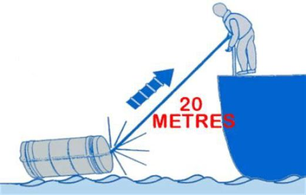
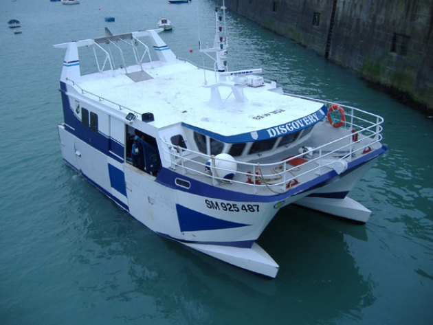

PAR JET
La mise en œuvre du moyen de sauvetage se fait à partir du poste de repos par largage puis par jet part dessus bord.
Hormis en cas de naufrage (libération automatique et remontée à la surface), la mise en œuvre de l'engin nécessite de le soulever et de le déplacer.
Le gonflage se produit grâce à l'action sur un bout de déclenchement qui doit rester amarré au pont du navire dans un premier temps.

Ce type de mise en œuvre est utilisée pour des radeaux de faible poids.
